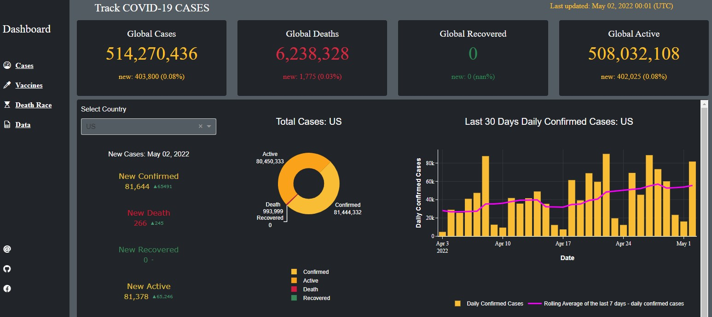
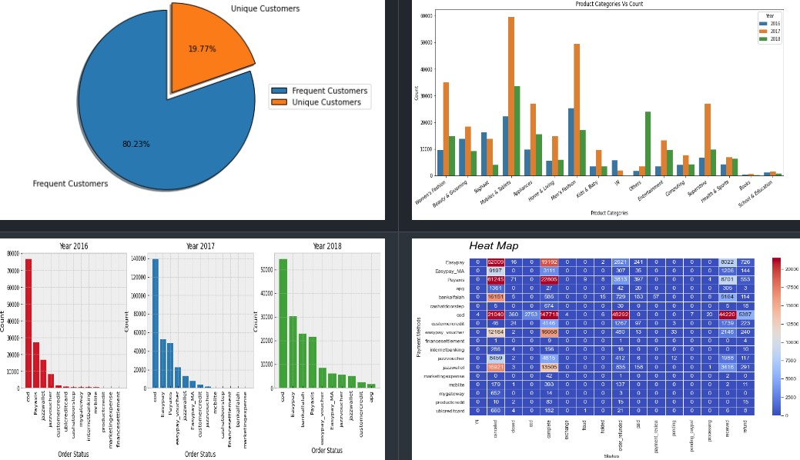
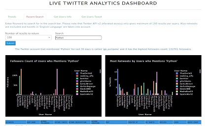
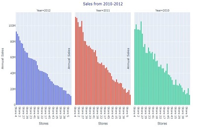

Data Analysis with Python
COVID-19 DASHBOARD Django Plotly Dash App
 This COVID-19 Dashboard tracks covid-19 confirmed, deaths, recovered, active cases. It also contains vaccination analysis. The data was collected from various sources such as CSSE at Johns Hopkins University and Our World in Data.
extractData.pyThe script starts by importing the necessary libraries and filtering out any FutureWarning messages. It then sets three URL variables for the three CSV files that contain information on confirmed cases, deaths, and recoveries.
The script then merges the three data frames using the merge() function, first merging the total_confirmed and total_deaths data frames, and then merging the result with the total_recovered data frame.
The script then converts the date column from string to proper date format using the pd.to_datetime() function. It checks the number of missing values using the isna().sum() function and replaces any NaN values in the recovered column with 0 using the fillna() function.
The script then creates a new column called active that calculates the number of active cases by subtracting the number of deaths and recovered cases from the number of confirmed cases. It then groups the data by date and calculates the total number of confirmed cases, deaths, recoveries, and active cases using the groupby() and sum() functions.
Finally, the script creates a dictionary of lists containing the latitude and longitude coordinates of each country using the set_index(), T(), and to_dict() functions.
processDFs.pyThis script imports some data from a file named extractData.py and performs some data cleaning tasks. After that, it converts the data types of some columns of the imported data and prepares a dataframe dfc for animation confirmed cases.
vaccinations_by_age_group.pyThis Python code imports necessary libraries and packages to create an interactive dashboard for visualizing vaccination data by age group. It fetches vaccination data by age group from a GitHub repository and loads it into a pandas dataframe.
The dataframe is sorted by date and location, and NaN values are filled with 0. The dashboard is built using the Dash library, which is a web application framework for building data-driven applications. The dashboard displays a dropdown menu with a list of countries to select from.
Based on the user's selection, the line chart shows the percentage of fully vaccinated people per hundred for each age group in the selected country over time. The code also uses the
DjangoDash library to integrate the dashboard into a Django project. Finally, the code defines a callback function to update the line chart based on the selected country in the dropdown menu.
The figure is customized with various layout settings to improve its appearance.
Similarly, there are few other scripts like vaccineManufacturer.py explores the data regarding vaccine manufacturers and deathRace.py animates the death toll in some countries.
More on Github Github
Data Analysis and Visualization on Ecommerce Dataset
 This is the largest retail e-commerce orders dataset from Pakistan. It contains half a million transaction records from March 2016 to August 2018. The data was collected from various e-commerce merchants as part of a research study.
The code reads a dataset from a CSV file, performs some data cleaning operations like dropping some unnecessary columns, checking for missing data, dropping rows with missing data, replacing zeros from certain columns with values from other columns, and extracting year and month from a column. The cleaned dataset is stored in a Pandas DataFrame. It explores, Best Seller Category Yearly, Highest Order Cancellation per Category, Highest Order Refunded per Category, Most Orders for Product and Top 10 Most Orders for Products, Most Qty of Products Ordered, Visualize payment method and order status frequency etc and plot relevent charts and graphs
More on Github Github
TwitterAPI/dash/plotly, A simple example
 This is a simple example of TwitterAPI/dash/plotly deployment on server using flask, gunicorn and docker.
appTrends.pyThe code is a Python script that imports several libraries including Plotly, Dash, and pandas. The script is designed to process Twitter trends and display them in a Dash web application. The script defines a generator function,
woidsGenerator, that reads a JSON file, removes invalid parent ids, creates a list of countries and parent ids, removes duplicates, and yields a list of woeids, country,
and parent ids. There is also a function called f that inserts a URL link inside a Dash DataTable.
The locationTrends variable is set to "United States" and a tuple object is created by calling the woidsGenerator function with the JSON file and locationTrends.
The woeid variable is set to the first value in the tuple object and lstCountryParentid is set to the second value. The listCountry variable is created by creating a
list of countries from the lstCountryParentid variable.
The trends_layout variable is a Dash container that includes a title row, a dropdown menu for selecting a country, a submit button, a notification row, a Dash table for displaying
trends, and an interval for updating trends (not shown in the tab).
The displayTrends function is a callback function that takes a country input from the dropdown menu, retrieves the trends using the woidsGenerator function, and displays them in a Dash table. The n_clicks input from the submit button triggers the callback function.
appTweetsSearch.pyThis Python code is a part of a Dash app that displays analytics of Twitter search results based on inputted keywords.
The code imports various modules, including plotly.express, dash_bootstrap_components, pandas, and re. It defines a function called "cleanText" that cleans
the text data by removing Twitter-specific content such as URLs, mentions, hashtags, and retweets.
The code defines a Dash layout for the tab "Recent Search," which includes a search bar, a dropdown menu for the number of results to display, and a
submit button. It also includes two bar charts and a Dash table for displaying trends.
The code defines a callback function called "display_value," which takes as input the number of clicks on the submit button, the number of results to
return, and the search term. The function uses the Twitter API to search for tweets containing the inputted search term, and then creates two bar charts
and a Dash table to display the results. The function returns the children of the notification component, the figure for the first bar chart, the figure
for the second bar chart, and the children of the Dash table.
There are other scripts such as getUsersTweet.py which gather user's tweet and getUsersInfo.py which collects user's info pretty much
basic use of Twitter's API
View it on Render
More on Github Github
Chicago Divvy Bicycle Sharing Data
In this short exercise data analysis and visualization is being performed on the Chicago Divvy bicycle sharing data from 2014 to 2017. The code begins by importing the required libraries such as numpy, pandas, matplotlib, seaborn, and plotly.express. Next, the dataset is downloaded using the Kaggle API and the csv file is loaded into a dataframe called 'df'. The code then inspects the data and checks for missing values. It also adds new features to the dataframe such as 'date', 'weekend', 'dayofweek', 'months', 'dayofmonth', 'dayofyear', 'trip_count', and 'season'. The 'season' column is added using the given Northern Hemisphere season dates. Finally, the code visualizes the data using different plots such as scatter plot, bar plot, line plot, heatmaps, etc. The code shows various visualizations such as hourly usage patterns, daily usage patterns, monthly usage patterns, popular start and stop stations, user types, etc.
More on Github Github
Emergency 911 Calls
This Python code performs data analysis and visualization on a dataset of 911 calls. Initially, it imports necessary libraries including NumPy, Pandas, Matplotlib, Seaborn, and Plotly. Then it downloads a dataset of 911 calls through Kaggle API and reads it into a Pandas DataFrame named df. The code performs some basic data cleaning and analysis by checking missing values and filling missing values in the zip column. It then answers some questions about the dataset such as the top 5 zip codes and townships for 911 calls and the most common reason for 911 calls. Finally, it visualizes the data by creating a Seaborn countplot and a Plotly histogram.
More on Github Github
Walmart Sales Dataset of 45 stores
 This Python code performs data analysis and visualization on a Walmart sales dataset of 45 stores. The code starts by importing necessary libraries like numpy, pandas, seaborn, matplotlib, and plotly for data manipulation and visualization. After that, it reads the Walmart sales dataset from a CSV file using Pandas. The code then performs data preprocessing tasks like inspecting the dataset's information, finding missing values, adding new features like holidays, season, and month names to the data frame. It also drops some columns and rearranges the data frame columns. Finally, the code performs exploratory data analysis using visualization techniques. It creates various charts and plots to analyze the annual sales of stores, monthly sales trends, sales by different holidays and seasons, sales based on temperature, fuel prices, CPI, and unemployment rate, etc. The code also provides insights into stores' performance and identifies the top-performing stores based on their annual sales.
More on Github Github